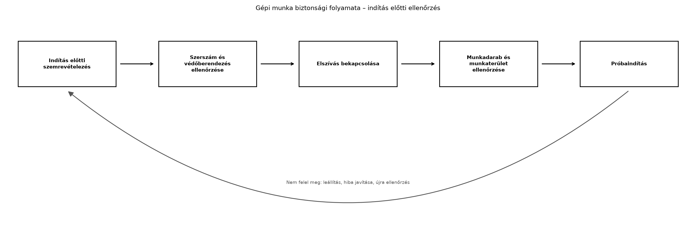
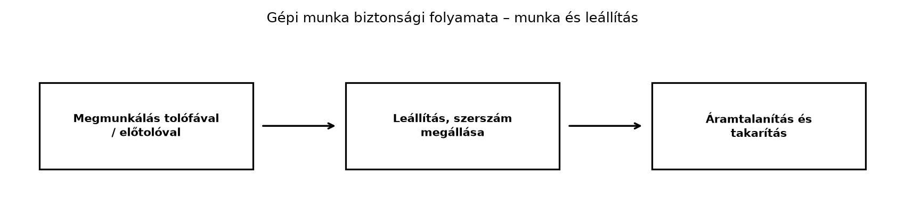

A műhelyben a gép nem „rossz” és nem is „gonosz”, de ha hibásan, védőberendezés nélkül vagy figyelmetlenül használod, a baleset pillanatok alatt bekövetkezik. A forgó körfűrészlap, a gyalukéstengely vagy a marószerszám olyan energiát összpontosít egyetlen élen, amely a fát könnyen vágja, de a kéz ujjait is azonnal roncsolja. A visszavágódó munkadarab pedig nem csupán a darabot teszi tönkre: hasba, mellkasba vagy arcba csapódhat, és súlyos, maradandó sérülést okozhat. Ebben az alfejezetben a faipari gépek legfontosabb veszélyeit és az ellenük védő berendezéseket tanulod meg. A cél, hogy a gépi munka előtt, közben és után olyan ellenőrzéseket végezz, amelyekkel a veszélyeket felismered, és soha ne kerülj abba a helyzetbe, hogy a testeddel kelljen megállítani a gépet.
Képzelj el egy asztalos körfűrészgépet. A gépasztalból egy acél fűrészlap emelkedik ki. A lap fogai olyan gyorsan mozognak, hogy szabad szemmel nem is látod őket: a forgó lap szinte sima, szürke tükörnek tűnik. A veszélyes zóna nem csak a látható fogakon van. A munkadarabot a lap felé toló kéz, a gép előtt álló test, sőt a gép mögött álló személy is veszélyben van. A behúzási pont ott keletkezik, ahol a fűrészlap fogai a fát elérik, és a darabot a lap felé húzzák. A visszavágódási zóna pedig a lap hátsó, emelkedő fogainál alakul ki: onnan a darab hirtelen, nagy erővel visszarepülhet a kezelő felé. A zaj és a fűrészpor szintén a gép „látványához” tartozik, mert hosszú távon ugyanúgy károsít, mint egy hirtelen baleset.
Az ábra az asztali körfűrész veszélyes zónáit mutatja. A fűrészlap elülső fogai lefelé, az asztal felé mozognak, és a darabot leszorítják; a hátsó fogak felfelé, a kezelő felé mozognak – ha a vágási rés a lap mögött összezáródik, ezek a darabot felemelhetik és visszarúghatják. Ezt akadályozza a lap mögötti rés-ék (hasítóék). A lap 300 mm-es körzetébe kéz csak tolófával vagy tolókocsival kerülhet (tájékoztató érték, ellenőrizendő: gépkönyv). A HTML-változatban a vágás rés-ékkel és rés-ék nélkül is lejátszható.
Definíció. A védőberendezés olyan szerkezeti elem, készülék vagy vezérlési megoldás, amely a gép veszélyes részeinek elérését megakadályozza, a veszélyes mozgást megszakítja, vagy a veszélyes energiát megszünteti. A védőberendezés lehet feltétlenül ható – ilyenkor a gép működéséből automatikusan következik a védelem, például a reteszelt ajtó vagy a fűrészlapot letakaró burkolat –, vagy feltételesen ható, amikor a védelem csak akkor működik, ha a kezelő helyesen használja, például a tolófa vagy a védőszemüveg.
Definíció. A visszavágódás (műhelyi szóval: visszarúgás) a munkadarabnak a forgó szerszám által okozott, hirtelen, a kezelő felé irányuló, nagy energiájú kilökődése. A visszavágódás legtöbbször a körfűrészgépnél, asztalos marógépnél és gyalugépnél fordul elő, amikor a darab beszorul, elfordul, vagy a szerszám hegye beakad a rostokba.
Definíció. A behúzás olyan veszély, amikor a forgó szerszám – például henger, szalag, késtengely, fűrészlap – a ruházatot, hajat, kesztyűt vagy a testrészt megragadja, és a gép belsejébe, a szerszám felé húzza. A behúzási pont az a hely, ahol a szerszám először érintkezik a betolni kívánt anyaggal.
Definíció. A hasítóék a körfűrészlap mögött elhelyezett, a lap síkjával azonos vonalban álló fémék. Feladata, hogy megakadályozza a vágási rés összezáródását a lap mögött, és ezzel csökkentse a visszavágódás és a beszorulás kockázatát.
Definíció. Az újraindulás elleni védelem olyan vezérlési funkció, amely áramkimaradás vagy vészleállítás után megakadályozza a gép önműködő újraindulását, ha a feszültség visszatér. A gépet ilyenkor a kezelőnek szándékosan, a vezérlőelem újraműködtetésével kell elindítania.
A faipari gépek veszélyeit mindig gépcsoportonként kell értelmezni, de a főbb veszélyforrások a következők.
Forgó szerszám érintése. Ez a legsúlyosabb és legközvetlenebb veszély. A szerszám lehet körfűrészlap, szalagfűrész, gyalukéstengely, marószerszám, fúró, csiszolóhenger. Az érintés rendszerint vágott, zúzott vagy szakított sérülést okoz, és gyakran ujj vagy kéz elvesztésével jár. A szerszám érintése ellen rögzített védőburkolat, beállítható védőburkolat, távolságtartó ütköző és kétkezes indítás véd.
Visszavágódás. Főleg a körfűrészgépen, a marógépen és a vastagsági gyalu bemenő oldalán jelentkezik. A darabot a szerszám fogai vagy kései felkapják és nagy sebességgel kidobják. Ezt a hasítóék, a visszacsapódást gátló fésű, a párhuzamvezető helyes beállítása, az előtoló berendezés és a megfelelő szerszámkiválasztás akadályozza meg. Döntő fontosságú a szabály: darabolásnál soha ne használd egyszerre a párhuzamvezetőt és a harántütközőt, mert a darab elfordulhat és beszorulhat.
Behúzás. A forgó hengerek, szíjak, láncok, késtengelyek és a munkadarabot továbbító görgők behúzhatják a ruhát, hajat vagy a testrészt. Ellenük védőburkolatok, behúzásgátló terelők, ujjhegy-távolsági burkolatok, szoros munkaruha és rövidre kötött haj szükséges. Kesztyűt forgó szerszám vagy forgó előtolóelem közelében tilos viselni, mert a kesztyű éppen hogy behúzási fogantyúként viselkedhet.
Kirepülő darabok, szerszámtöredékek. Ha a szerszám eltörik, ha a munkadarabból szilánk, göcs, idegen test (szeg, kő) kiválik, az nagy sebességgel távozhat. A védőburkolat, védőszemüveg, álarc, acélbetétes lábbeli és a gépen belüli szerszámrögzítés ellenőrzése csökkenti a sérülést.
Zaj. A faipari gépek tartós zajszintje gyakran meghaladja a napi megengedhető határértéket (jelölve: aktuális rendelet szerinti határérték, ellenőrizendő). A zaj halláskárosodást okozhat. A zajcsökkentő burkolat, a gép jó karbantartása, a szerszámok kiegyensúlyozottsága és az egyéni hallásvédelem (pl. fejre illeszthető fültok) a védekezés eszköze.
Por és fapor. A forgácsolás során keletkező finom por – különösen a kemény lombos fák pora – belélegezve károsíthatja a légutakat, és egyes fafajok pora rákkeltő besorolás alá eshet (jelölve: aktuális CLP-besorolás és munkahelyi határérték). A pontforrásnál kiépített elszívás, a megfelelő porszűrő légzésvédelem és a rendszeres takarítás a fő védekezés. A por a levegőben robbanóképes keveréket is alkothat, ezért a porrobbanás veszélyét a Tűzvédelem, villamos biztonság és környezetvédelem részben tárgyaljuk.
Védőburkolat. A forgó szerszámot, erőátviteli elemeket, fogaskerekeket, szíjakat, láncokat takaró, rögzített vagy nyitható burkolat. A rögzített burkolat csak szerszámmal bontható, a nyitható burkolat reteszelt: ha kinyitják, a gép leáll vagy nem indítható. Fűrészgépen a fűrészlap felső védőburkolata a vágási mélységhez igazodik, és a lapot a lehető legkisebb mértékben hagyja szabadon.
Hasítóék. A körfűrészlap mögött, a lap vastagságához igazodó, szilárdan rögzített acélék. A hasítóék távolsága a laptól kicsi (jellemzően 2–8 mm, tájékoztató érték, ellenőrizendő a gépkönyv szerint), és magassága közel a lap magasságához igazodik. Feladata, hogy a vágási rést nyitva tartsa, és a fűrészlap hátulsó fogait ne érje a beszoruló darab.
Nyomófésű (visszacsapódásgátló). A vastagsági gyalugép és egyes előtoló berendezések bemenő oldalán elhelyezett, lefelé irányuló fogazott vagy rugós lemez. A darabot a gépbe beengedi, de a hátrafelé mozgó darabot megfogja, így akadályozza a visszavágódást.
Tolófa. Egyszerű, fából vagy műanyagból készült, nyéllel ellátott tolóeszköz. A kezelő a kezét a szerszámtól távol tartva, a tolófával vezeti a munkadarabot. Keskeny darabok, vágások és marási műveleteknél kötelező.
Tolókocsi, tolószán. A gépasztalon csúszó, vezetett kocsi, amely a munkadarabot rögzíti és a vágási vonalon végigvezeti. A kezelő keze a kocsi fogantyúján van, távol a vágási zónától. Használata különösen harántirányú vágásoknál, gérvágásnál, sorozatdarabolásnál fontos.
Ütközők (párhuzamvezető, harántütköző). A munkadarab helyzetét és a vágási méretet meghatározó, rögzíthető vezetők. A biztonságos munkavégzéshez a megfelelő ütközőt kell használni, és a másik ütközőt ilyenkor el kell távolítani vagy semleges helyzetbe kell állítani, ahogy a visszavágódásnál említettük.
A tolófa, a tolókocsi és a párhuzamvezető helyes használatát és a tipikus hibás mozdulatokat a következő ábra mutatja felülnézetben.
Előtolóberendezés. Gépi erővel forgó, a munkadarabot a szerszámhoz szorító és továbbító görgős, szalagos vagy láncos szerkezet. Használata egyenletes előtolást ad, a kezelő kezét távol tartja a szerszámtól, és csökkenti a visszavágódást. Különösen marógépeknél, vastagsági gyalu betoló oldalán indokolt.
Fékezés. A faipari gépek szerszámainak leállása a kikapcsolás után nem azonnali. A jó gép fékberendezéssel vagy legalább rövid kifutási idővel rendelkezik. A fékezés azt jelenti, hogy a szerszám néhány másodpercen belül megáll. A féket rendszeresen ellenőrizni kell. A biztonságos gyakorlat szerint a kezelő a gép kikapcsolása után soha ne nyúljon a szerszámhoz, amíg az teljesen meg nem állt.
Vészleállító. Jól látható, elérhető, piros–sárga jelölésű nyomógomb vagy ütközőzsinór, amely a gép mozgását azonnal megszakítja. A vészleállítót a gép minden kezelési helyéről, a betáplálási és kivezetési oldalról is el kell érni. Megnyomása után a gép nem indulhat újra automatikusan.
Újraindulás elleni védelem. A gép vezérlése úgy van kialakítva, hogy áramkimaradás vagy vészleállítás után az energia visszatértekor a gép ne induljon el magától. Ezt gyakran a mágneskapcsoló reteszelése biztosítja. Ezt a funkciót az indítás előtti ellenőrzéskor tesztelni kell (ellenőrizendő: a gépkönyv szerinti tesztelési mód).
Minden géphez tartozik gépkönyv (más néven kezelési és karbantartási útmutató). A gépkönyv azt írja le, mire való a gép, milyen szerszámokkal használható, milyen fordulatszám-tartományban, milyen védőberendezésekkel, és milyen karbantartási feladatai vannak. A gépkönyvben szereplő rendeltetésszerű használat fogalma azt jelenti: a gépet csak arra a műveletre, azzal az anyaggal, azzal a szerszámmal és azzal a beállítással szabad használni, amelyet a gyártó megenged. A gépkönyvben megadott megengedett legnagyobb fordulatszám a szerszámra nézve kötelező érvényű: soha ne szerelj fel olyan fűrészlapot, marószerszámot vagy fúrót, amelynek a jelölt megengedett fordulatszáma kisebb, mint a gép tényleges fordulatszáma.
Szabály. A gépkönyvet mindig a gép mellett kell tartani, és a betanítást végző oktatóval közösen át kell nézni. A gépkönyvben szereplő biztonsági fejezetet a tanulónak ismernie kell, mielőtt a gépet kezelné. A gépkönyv hiánya vagy olvashatatlansága esetén a gépet nem szabad használni.
A gépterem biztonságos üzemeltetéséhez az alábbi rendet kell fenntartani:
A forgó szerszámok és előtolóelemek közelében a következő szabályok érvényesek:
Gépbiztonság. A faipari gépet csak betanított, felügyelt tanuló kezelhet; védőberendezés nélkül, egyedül, fáradtan ne végezd. A védőburkolat, a hasítóék, a nyomófésű, a vészleállító és az elszívás nem dísz, hanem a gép része. Minden beállítás előtt a gépet állítsd le, várd meg, amíg a szerszám teljesen megáll, és áramtalanítsd (húzd ki a hálózati csatlakozót vagy használd a leválasztó kapcsolót), mielőtt a védőburkolatot kinyitnád, szerszámot cserélnél vagy takarítanál. Tilos a védőburkolatot, hasítóéket, reteszelést kiiktatni; tilos kesztyűben forgó szerszámot megközelíteni; tilos a darabot kézzel tolófa nélkül a szerszám közelébe juttatni; tilos túl rövid vagy túl keskeny darabot gépi úton megmunkálni.
Ellenőrzőlista. Ez a számozott lista a gépi munka előtti, közbeni és utáni teendőket foglalja össze. A lépéseket sorrendben végezd el.
Indítás előtt szemrevételezés. Ellenőrizd a gép tisztaságát, a védőburkolatok meglétét, a kábelek és csatlakozók állapotát, az elszívó csatlakozását. – Ellenőrzés: nincs sérült, kilógó, repedt burkolat vagy kábel.
Szerszámellenőrzés. Ellenőrizd a szerszám épségét, repedésmentességét, rögzítését és a megengedett fordulatszám jelölését a szerszámon. – Ellenőrzés: a szerszám megengedett fordulatszáma nagyobb vagy egyenlő, mint a gép tényleges fordulatszáma.
Védőberendezések beállítása. Állítsd be a védőburkolatot, a hasítóéket, a nyomófésűt és az ütközőket a művelethez. A forgó szerszámnak csak a munkavégzéshez feltétlenül szükséges része legyen szabadon. – Ellenőrzés: a burkolat a szerszámot a munkadarab vastagságához igazodva takarja.
Elszívás bekapcsolása. Porképző műveletnél kapcsold be az elszívást, és győződj meg a légáramlásról (pl. a szívócsonknál érezhető huzat). – Ellenőrzés: az elszívó működik, a szűrő nem telített.
Munkadarab ellenőrzése. A darabon ne legyen idegen test (szeg, csavar, kő), laza göcs, repedés, fém alkatrész. – Ellenőrzés: a darab hibamentes; ha repedt vagy szeges, ne munkáld meg.
Munkaterület-ellenőrzés. A gép körüli padló tiszta, száraz, a menekülési út szabad, a vészleállító elérhető. – Ellenőrzés: nincs botlásveszély, semmi sem takarja a vészleállítót.
Próbaindítás. Kapcsold be a gépet, és várj néhány másodpercet. Figyelj a rendellenes zajra, rezgésre, szagokra. – Ellenőrzés: a gép egyenletes, üresjárati zajjal jár, nincs ütés, csörgés.
Megmunkálás. A megmunkálást a megfelelő előtoló eszközzel (tolófa, tolókocsi, előtolóberendezés) végezd. A kezed tartsd távol a forgó szerszámtól. Soha ne nyúlj hátra a szerszám mögé, és ne hajolj a vágási vonal fölé. – Ellenőrzés: a kéz mindig a védőzónán kívül van, tolófa használatban, ha szükséges.
Leállítás. A művelet végén kapcsold ki a gépet, és várd meg, amíg a szerszám teljesen leáll. – Ellenőrzés: a szerszám nem forog, a kifutási idő a gépkönyv szerinti.
Takarítás. Csak a szerszám teljes leállása és áramtalanítás után takarítsd a gépet és a környékét. – Ellenőrzés: a gép áramtalanítva, a takarítás porszívóval/elszívóval és kefével történik; sűrített levegővel faport kifújni tilos. Az olajos rongyot zárt, nem éghető fémtartályban gyűjtsd (vagy szabadban kiterítve szárítsd), és veszélyes hulladékként add le (ellenőrizendő: termék biztonsági adatlapja).
A következő két diagram a gépi munka előtti, közbeni és utáni ellenőrzések sorrendjét mutatja. Az első az indítás előtti ellenőrzés: a visszacsatoló nyíl azt jelzi, hogy ha bármelyik ellenőrzés nem felel meg, a gépet le kell állítani, a hibát meg kell szüntetni, és az ellenőrzést elölről kell kezdeni. A második a munka és a leállítás sorrendje; ide csak akkor jutunk, ha minden ellenőrzés megfelelt.


A faipari gépeket gyakran több műveletre is lehet használni, de ez nem jelenti azt, hogy bármire. A gépkönyv megadja a rendeltetésszerű használat kereteit. Például egy asztalos körfűrész alkalmas tömörfa és faalapú lapok hossz- és harántvágására, de nem alkalmas fém, kő, gumi vágására, és nem szabad rá köszörűkorongot, marótárcsát vagy más szerszámot szerelni. A gép biztonságos beállítása a következőket jelenti:
Szabvány. A faipari gépek biztonsági követelményeit az MSZ EN ISO 19085 sorozat (faipari gépek biztonsága) tartalmazza. A sorozat egyes részei az egyes géptípusokra – például körfűrészgépek, gyalugépek, marógépek, szalagfűrészgépek – vonatkoznak, és előírják a védőberendezések, a vészleállítók, a vezérlési biztonsági funkciók, a zaj- és porkibocsátás mérésének követelményeit. A gépek forgalmazására az uniós (EU) 2023/1230 géprendelet, 2027. január 20-tól alkalmazandó (ellenőrizendő; a korábbi gépirányelvet felváltó szabályozás) vonatkozik. A munkahelyi használat biztonsági minimumait a munkavédelmi törvény (1993. évi XCIII.) és a munkaeszközökre vonatkozó miniszteri rendelet határozza meg (ellenőrizendő: hatályos rendelet száma). Az adott gép mindenkori, konkrét biztonsági előírásait a gépkönyvben kell ellenőrizni.
1. A védőburkolat eltávolítása vagy kiiktatása. - Tünet: A kezelő szerint „a burkolat zavarja a rálátást” vagy „lassítja a munkát”. - Ok: A gyorsaság vagy a kényelem előtérbe helyezése. - Következmény: A szerszám érinthetővé válik, a kirepülő darab akadálytalanul távozhat. - Helyes gyakorlat: A védőburkolatot soha ne szereld le, és ne tedd hatástalanná. Ha a burkolat akadályoz, állítsd be a munkadarabhoz, vagy használj más védelmi megoldást, de ne dolgozz nélküle.
2. Kesztyű viselése forgó szerszámnál. - Tünet: A dolgozó télen kesztyűt húz, mert fázik a keze, és úgy marad a gépnél is. - Ok: A kesztyű-tilalom figyelmen kívül hagyása. - Következmény: A kesztyű ujja beakadhat a szerszámba, és a kezet a szerszám felé rántja. - Helyes gyakorlat: A gépnél kesztyű nélkül dolgozz. A hideg ellen használj fűtött műhelyt, megfelelő munkaruhát, vagy tarts szünetet, ha a kéz zsibbadt.
3. Ütköző és párhuzamvezető egyidejű használata darabolásnál. - Tünet: A dolgozó a hosszvágó körfűrészen a párhuzamvezetővel méretre állítja a darabot, közben a harántütközőt is használja, hogy egyenlő hosszakat vágjon. - Ok: A műveleti sorrend és a visszavágódás mechanizmusának nem ismerete. - Következmény: A darab az ütközők közé szorul, elfordul, a fűrészlap hátulsó fogai felkapják, és a darab visszavágódik. - Helyes gyakorlat: Darabolásnál soha ne használd egyszerre a párhuzamvezetőt és a harántütközőt. A hosszvágást és a harántvágást külön műveletként, a megfelelő ütközővel végezd.
4. Túl rövid vagy túl keskeny darab gépi megmunkálása. - Tünet: A dolgozó a gépkönyvben megadott legkisebb darabhossznál rövidebb (pl. 100 mm alatti) darabot akar körfűrészen levágni, vagy a megengedettnél keskenyebb (pl. 30 mm alatti) csíkot gyalulni (tájékoztató, ellenőrizendő: gépkönyv). - Ok: A gépkönyvi korlátok figyelmen kívül hagyása. - Következmény: A kéz a szerszám közelébe kerül, vagy a darab eldeformálódik, beszorul, visszavágódik. - Helyes gyakorlat: A megadott minimális darabméreteket tartsd be. Kisebb darabokat sablonban, befogó készülékben, tolófával vagy kézi szerszámmal munkálj meg.
5. A gépkönyv figyelmen kívül hagyása, nem betanított kezelő. - Tünet: A tanuló „már látta, hogyan kell”, és egyedül indítja el a gépet. - Ok: Túlzott magabiztosság, a felügyelet hiánya. - *Következmény:** A gép olyan funkcióját, beállítását vagy vészleállítóját nem ismeri, ami balesethez vezet. - Helyes gyakorlat: A gépet csak betanítás után, oktató felügyelete mellett kezeld. A gépkönyvet előtte olvasd el, és kérdezz, ha valamit nem értesz.
Valós eset. Egy asztalos műhelyben a szakmunkás hosszvágó körfűrészen vágott 18 mm vastag bükk deszkát. A gép felső védőburkolata korábban megsérült, ezért leszerelték, és „majd megcsinálják”. A munka során a deszka a vágási résben beszorult, a fűrészlap hátulsó fogai felkapták, és a darab hirtelen, nagy erővel a szakmunkás hasába csapódott. A baleset súlyos zúzódást okozott, és a szakmunkás hetekig nem tudott dolgozni. A kivizsgálás során kiderült: a hasítóék is hiányzott, és a darabot nem tolófával, hanem kézzel tolták. A hiányzó védőburkolat és hasítóék együttesen tette lehetővé a visszavágódást. A tanulság: a védőberendezés soha nem „későbbre halasztható” karbantartási tétel, hanem a gép biztonságos működésének feltétele. Ha a burkolat megsérül, a gépet azonnal le kell állítani, és csak a pótlás után szabad újra használni.
1. feladat (A) Sorold fel egy faipari gép hat jellemző veszélyét, és mindegyikhez rendelj egy-egy védőberendezést vagy védelmi intézkedést!
2. feladat (A) Magyarázd el röviden, mi a különbség a feltétlenül ható és a feltételesen ható védőberendezés között! Adj mindkettőre faipari példát!
3. feladat (B) Írd le egy körfűrészgép indítás előtti ellenőrzőlistáját számozott lépésekben, legalább hét lépéssel! (A szövegben szereplő lista alapján, de saját szavaiddal.)
4. feladat (B) Dolgozz ki egy gépi munka biztonsági folyamatábrát (szöveges lépésekkel) egy vastagsági gyalu használatára! Tüntesd fel az indítás előtti, közbeni és utáni ellenőrzéseket!
5. feladat (C) Hibaelemzés: Egy tanuló az asztalos körfűrészen 20 mm széles léceket vág. A gép felső védőburkolata fent van, a tanuló tolófát használ. A vágás végén a léc beszorul, és a tanuló hirtelen visszarántja a tolófát. Mi történhet, és milyen védőberendezés hiányzik? Mi a helyes eljárás?
6. feladat (D) Tervezz meg egy ellenőrzési munkalapot (papíron) egy általad választott faipari gép napi indítás előtti biztonsági ellenőrzéséhez! A munkalapon legyenek oszlopok: Ellenőrzési pont, Módszer, Megfelelő / Nem megfelelő, Teendő nem megfelelőség esetén. Töltsd ki legalább nyolc sorral!
Önellenőrzés – válaszok
1. feladat (A) - Forgó szerszám érintése → védőburkolat, távolságtartó ütköző. - Visszavágódás → hasítóék, nyomófésű, tolófa, helyes ütközőhasználat. - Behúzás → szoros ruházat, hajvédelem, behúzásgátló, kesztyű tilalma. - Kirepülő darab, szerszámtöredék → védőburkolat, védőszemüveg, szerszámellenőrzés. - Zaj → zajcsökkentő burkolat, hallásvédelem. - Por → elszívás, légzésvédelem, takarítás.
2. feladat (A) - Feltétlenül ható védőberendezés: a gép működéséből automatikusan következik a védelem, a kezelő külön beavatkozása nélkül. Példa: a rögzített védőburkolat, amely szerszám nélkül nem bontható, vagy a reteszelt ajtó, amely nyitáskor leállítja a gépet. - Feltételesen ható védőberendezés: csak akkor véd, ha a kezelő helyesen használja. Példa: a tolófa vagy a védőszemüveg. Ha a kezelő nem használja, nincs védelem.
3. feladat (B) Példa-felsorolás (a tanuló saját szavaival kell): 1. Ellenőrzöm a gép tisztaságát, a burkolatok meglétét. 2. Ellenőrzöm a fűrészlap épségét, rögzítését, megengedett fordulatszámát. 3. Beállítom a hasítóéket és a felső védőburkolatot. 4. Beállítom a párhuzamvezetőt, rögzítem. 5. Bekapcsolom az elszívást. 6. Ellenőrzöm a munkadarabot idegen test és hiba szempontjából. 7. Ellenőrzöm a munkaterületet és a vészleállító elérhetőségét. 8. Próbaindítást végzek, figyelek a zajra, rezgésre. 9. Megmunkálás tolófával. 10. Leállítás, szerszám megállása, áramtalanítás, takarítás.
4. feladat (B) Vastagsági gyalu biztonsági folyamata: - Indítás előtt: védőburkolat, nyomófésű, elszívás, gépasztal és görgők tisztasága, munkadarab vastagsága a megengedett tartományban, vészleállító teszt. - Közben: a darabot az adagolóasztalra helyezem, a gép behúzza, de én nem nyúlok a görgők közelébe; figyelek a visszavágódásra; ha a darab megakad, leállítom a gépet, nem erőltetem kézzel. - Után: leállítás, a szerszám megállásának kivárása, áramtalanítás, a gép tisztítása, a nyomófésű és a burkolat visszaállítása.
5. feladat (C) A beszoruló léc a fűrészlap hátulsó fogaihoz érhet, és a gép visszavághatja a darabot, vagy a lécet a forgó lap elrántja. A tolófa visszarántása nem szünteti meg a beszorulást, sőt a darab elfordulhat. A hiányzó védőberendezés a hasítóék lehet: nélküle a vágási rés összezáródhat, és a darab beszorul. A helyes eljárás: a gépet azonnal le kell állítani, megvárni a lap teljes megállását, áramtalanítani, majd a beszorult darabot óvatosan, a védőburkolat felnyitása után eltávolítani. Megelőzésként mindig használjunk hasítóéket, és a keskeny darabokhoz megfelelő tolóeszközt.
6. feladat (D) A megoldás egy kitöltött munkalap-táblázat legyen, például körfűrészre:
| Ellenőrzési pont | Módszer | Megfelelő / Nem megfelelő | Teendő nem megfelelőség esetén |
|---|---|---|---|
| Felső védőburkolat megléte és állapota | Szemrevételezés, kézi mozgatás | ☐ Megfelelő ☐ Nem | A gépet nem szabad használni, burkolatot pótolni/javítani |
| Hasítóék megléte, távolsága a laptól | Szemrevételezés, sablon | ☐ Megfelelő ☐ Nem | Beállítás vagy pótlás |
| A fűrészlap épsége, repedésmentessége | Szemrevételezés, ujjal óvatos átvizsgálás (kikapcsolt állapotban) | ☐ Megfelelő ☐ Nem | Lapcsere, élezés |
| A szerszámrögzítés szorossága | Kulcsnyomaték-ellenőrzés, gépkönyv szerint | ☐ Megfelelő ☐ Nem | Utánhúzás |
| Vészleállító működése | Nyomáspróba, visszajelzés | ☐ Megfelelő ☐ Nem | Villamos szakembernek jelezni, a gépet nem használni |
| Elszívó csatlakozás és légáramlás | Kézzel érzékelt huzat, manométer | ☐ Megfelelő ☐ Nem | Szűrőcsere, tömlőjavítás |
| Munkaterület és menekülési út szabad | Szemrevételezés | ☐ Megfelelő ☐ Nem | Rendrakás, kiürítés |
| Kábelek, csatlakozók épsége | Szemrevételezés | ☐ Megfelelő ☐ Nem | A gépet nem használni, villamos szakembernek jelezni |
A faipari gépek fő veszélyei: a forgó szerszám érintése, a visszavágódás, a behúzás, a kirepülő darab, a zaj és a por. A védelem alapja a védőburkolat, a hasítóék, a nyomófésű, a tolófa vagy tolókocsi, a megfelelő ütközők, az előtolóberendezés, a fékezés, a vészleállító és az újraindulás elleni védelem. A gépi munkát csak betanított, felügyelt tanuló végezheti, a gépkönyv szerint, védőberendezés nélkül soha. A munka előtt ellenőrizni kell a szerszámot, a védőberendezéseket, az elszívást, a munkadarabot és a munkaterületet; közben a kezet távol kell tartani a szerszámtól, és nem szabad kesztyűt viselni forgó szerszámnál; a munka végén a gépet le kell állítani, megvárni a szerszám megállását, és áramtalanítás után takarítani. A forgó szerszámot, a hosszú hajat, az ékszert és a lógó ruhát behúzó gép ellen a legjobb védekezés a szoros munkaruha, a hajvédelem és az ékszerek eltávolítása. A gépteremben tiszta, csúszásmentes padlót, szabad közlekedési utakat és elérhető vészleállítókat kell fenntartani. Ezt az ellenőrzési rendszert minden további gépi alfejezet – így a Gépi szerszámok kezelése, ellenőrzése, szállítása és tárolása, a Por- és forgácselszívás, fapor-expozíció és a Faipari csiszológépek: szalag-, henger-, kontakt-, széles szalagú, tárcsás és élcsiszolók – is használja.
Forrástípusok: munkavédelmi törvény (1993. évi XCIII., hatályos szöveg); MSZ EN ISO 19085 sorozat (faipari gépek biztonsága); az uniós géprendelet (a korábbi 2006/42/EK gépirányelvet felváltó jogszabály); a munkaeszközök és használatuk minimális biztonsági követelményeiről szóló rendelet (ellenőrizendő: hatályos rendelet száma; a Munkaeszközök biztonsága: szerszám, gép, berendezés, dokumentáció 10/2016. (IV. 5.) NGM számot, egyes források a 14/2004. (IV. 19.) FMM rendeletet említik); az (EU) 2023/1230 géprendelet, 2027. január 20-tól alkalmazandó (ellenőrizendő); gyártói gépkönyvek és megfelelőségi nyilatkozatok; faipari biztonságtechnikai szakkönyvek és oktatóanyagok.
Ellenőrizendő: a géprendelet pontos száma és hatálybalépési, átmeneti időpontja; a faipari gépekre vonatkozó MSZ EN ISO 19085 sorozat egyes részeinek pontos hivatkozásai; a zaj- és porhatárértékek aktuális jogszabályi értékei; a hasítóék és a fűrészlap közötti távolság, a minimális darabméretek és a védőburkolat beállítási értékei a konkrét gépkönyvek szerint; a vészleállító szín- és formai jelölésére vonatkozó szabványok aktuális számai; a kesztyű-tilalom és az egyéni védőeszközök pontos feltételei.